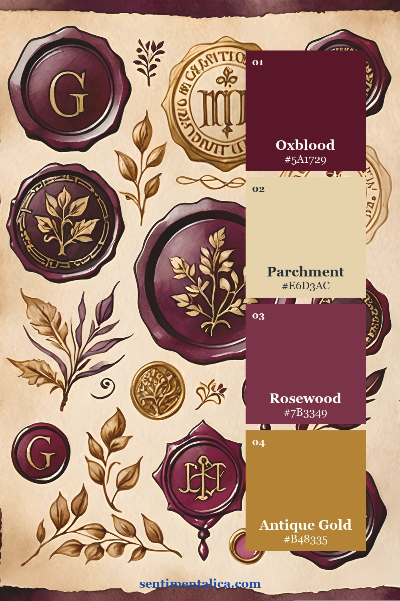
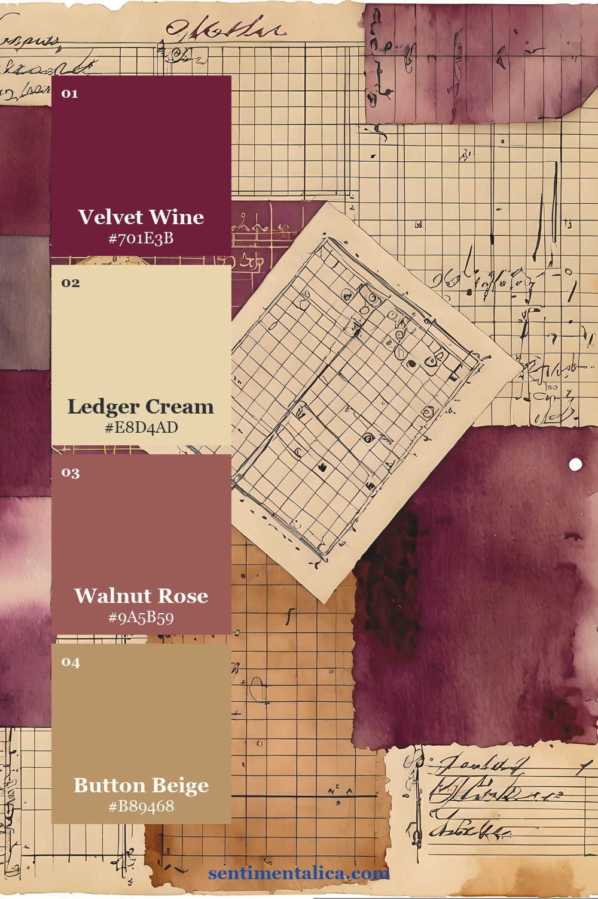
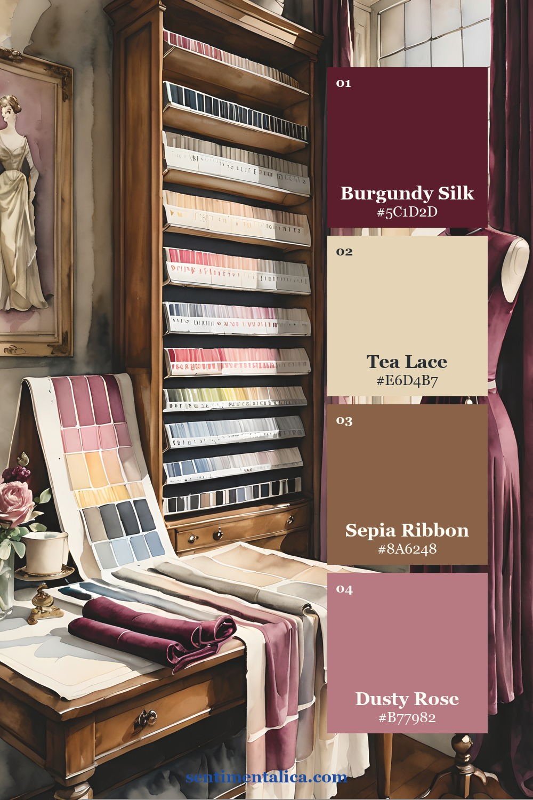

A Victorian sewing journal feels convincing when its colors look as though they belong to the same old workroom. The Velvet Archive printable image pack already contains that visual story: oxblood thread, worn pattern paper, blush-brown fabric, aged envelopes, brass buttons, and creamy ledger sheets. These three palettes are sampled from three different listing compositions, so you can choose a mood without drifting away from the collection.
Palette one: the dressmaker's drawer

Use Antique Parchment as roughly 60% of a spread: the main page, writing space, or large torn layer. Let Oxblood Thread occupy about 25% through a pocket, tag, ribbon, or one decisive image. Add Faded Rosewood in smaller fabric-like pieces, then reserve Gilded Cream for tiny highlights. The restraint is what makes the burgundy feel luxurious instead of heavy.

Palette two: ledger and velvet

This softer formula works beautifully for writing pages. Begin with Ledger Cream, repeat Button Beige in labels and mats, and use Velvet Wine only where you want the eye to stop. Walnut Rose bridges the light and dark values, which makes it especially useful for narrow borders, postage shapes, and folded tabs.
The easy test is to view the spread from across the table. If every dark piece demands attention, remove one. A good vintage palette needs quiet paper around its focal color.

Palette three: ribbon, pattern paper, and tea lace

Choose this palette when you want a warmer, more textile-led journal. Pattern Paper and Tea Lace create the base; Sepia Ribbon adds warmth without becoming orange; Burgundy Silk supplies the dramatic stitch line. Try repeating burgundy exactly three times—perhaps in a button illustration, a narrow ribbon, and a wax-seal-shaped detail—to guide the eye across the page.

A simple assembly formula
- Pick one pale foundation color and cover most of the page with it.
- Add one medium bridge color in two or three places.
- Place the darkest color at the focal point and repeat it in tiny echoes.
- Finish with a metallic-looking neutral, cream, or warm beige rather than adding a fifth accent.
The Velvet Archive pages make this easier because the envelopes, ledgers, buttons, frames, and fabric-inspired motifs already share one atmosphere. Print the elements you need, test the arrangement before gluing, and keep a palette image beside your workspace as a quick editing guide.